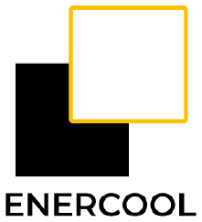
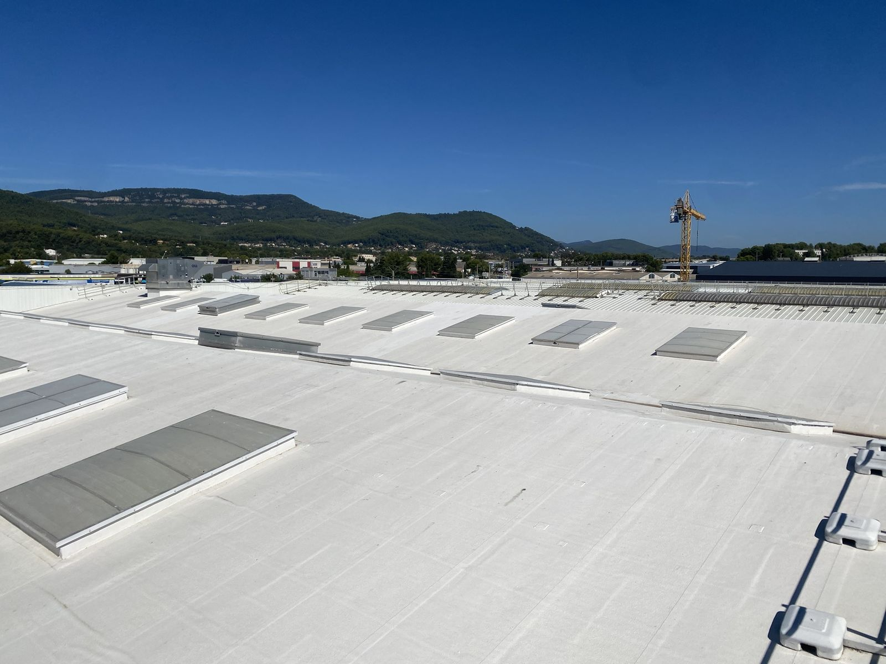
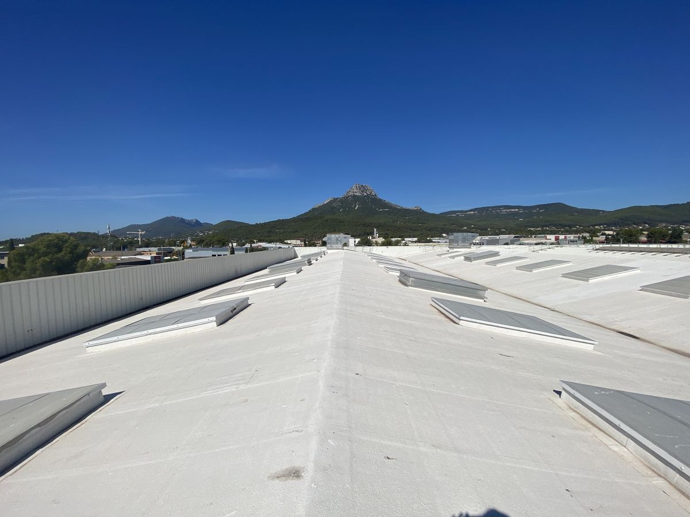
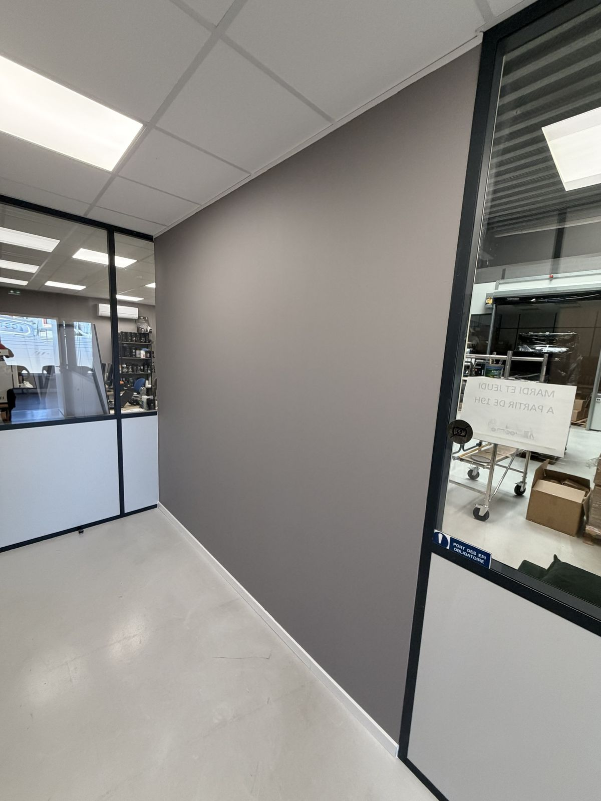
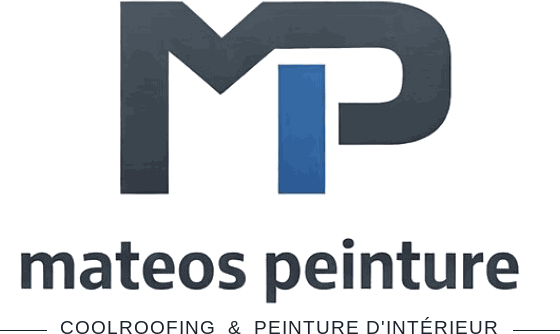

Avis clients
Nos avis sont sur notre fiche Google. Vous avez travaillé avec nous ? Laissez-nous un mot, ça aide les prochains clients à nous trouver.
Nous peignons les toitures en blanc avec une peinture réflective, le cool roofing. Le toit renvoie jusqu'à 85 % du soleil au lieu de chauffer, et il fait plus frais à l'intérieur. Nous travaillons de Toulon à Narbonne, sur des entrepôts, des commerces, des bureaux et des logements.

Applicateur officiel Enercool
La peinture réflective de toiture et la peinture d'intérieur, pour les pros comme pour les particuliers.


Nos avis sont sur notre fiche Google. Vous avez travaillé avec nous ? Laissez-nous un mot, ça aide les prochains clients à nous trouver.

Mateos Peinture, c'est Quentin Mateos, installé à Toulon. C'est lui qui vient voir votre toit, qui fait le devis, qui peint et qui vérifie le résultat avec vous à la fin. Vous gardez le même numéro du début à la fin.
Avant de chiffrer, nous regardons l'état du support. Le devis détaille chaque poste. Pendant le chantier, on protège ce qui doit l'être et on vous explique ce qu'on fait, au fur et à mesure.
Nous sommes applicateur officiel Enercool, avec une assurance décennale et une RC Pro. Nous travaillons de Toulon à Narbonne, pour des entreprises, des collectivités, des bailleurs, des copropriétés et des particuliers. Voir nos zones d'intervention.